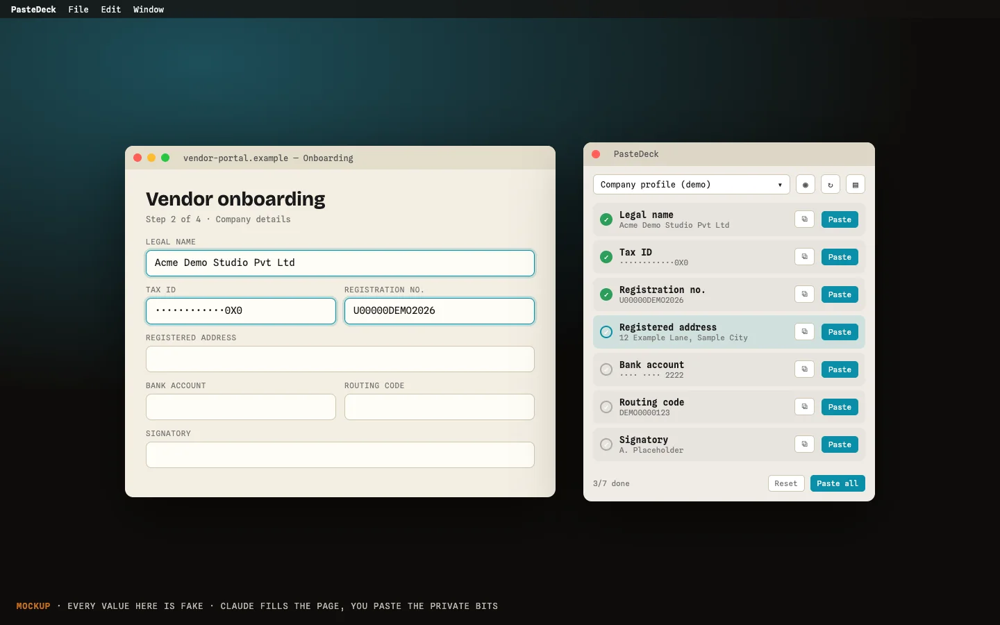

PasteDeck · a tiny Mac panel
PasteDeck
Claude, quite rightly, refuses to handle certain sensitive stuff. So I made a floating panel of values I paste myself.

What it does
Claude does the work, I do the pasting, and I never go hunting for the same thing twice.
Status
A local Mac app. Not released.
Mockup of a local Mac app; every value shown is fake.